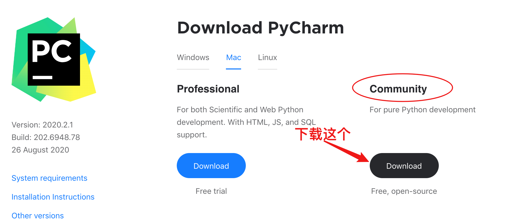
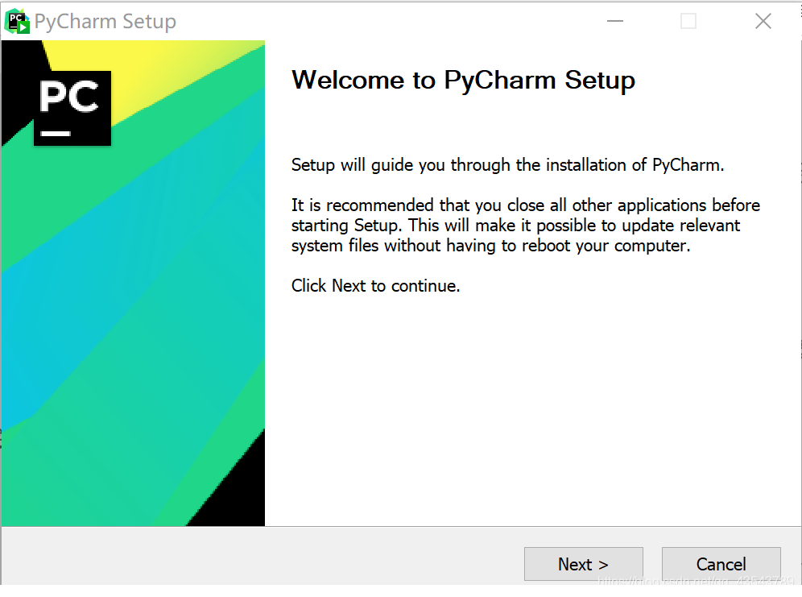
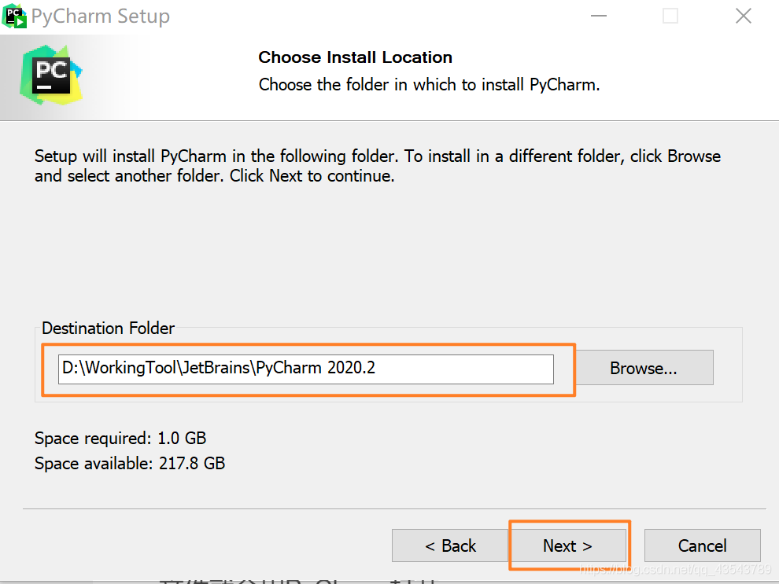
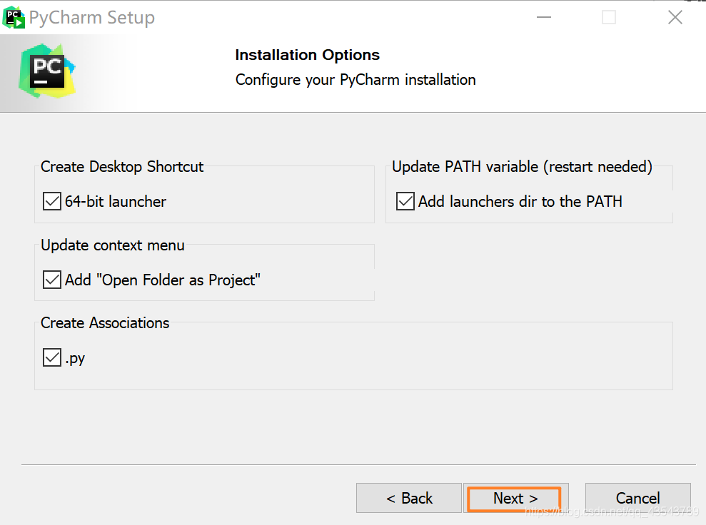
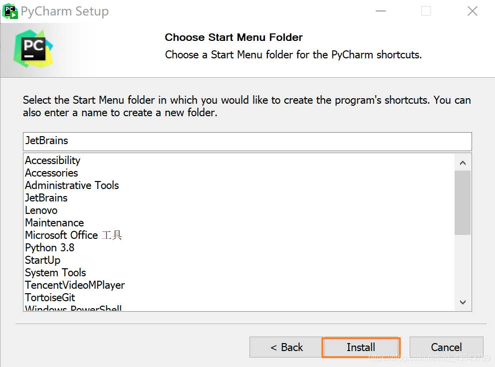
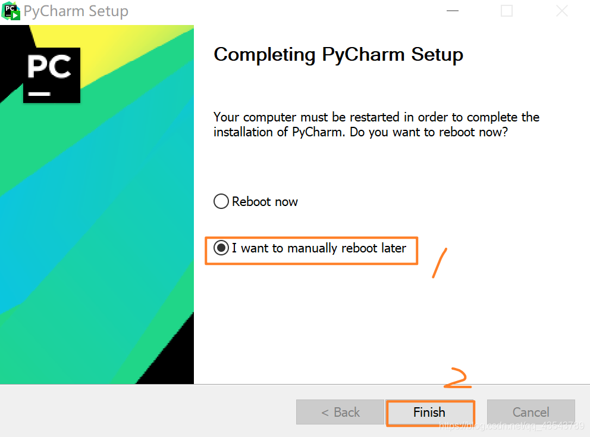
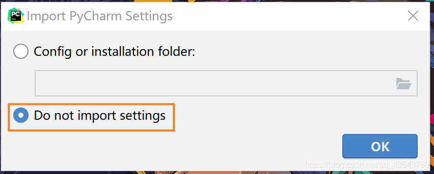
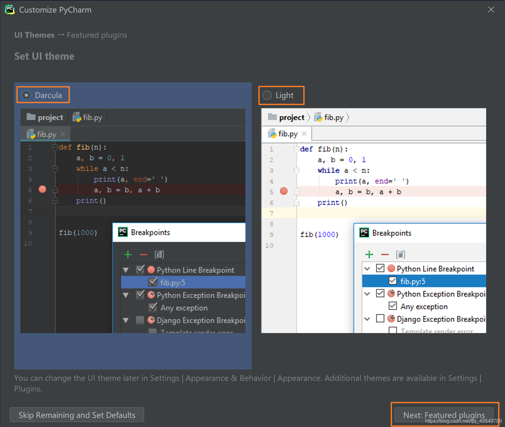
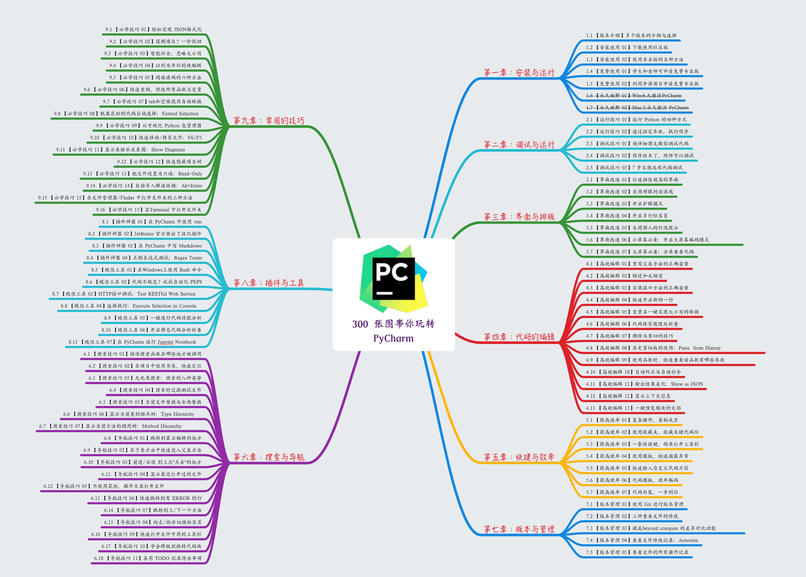

1.2 【环境】Python 开发环境的搭建¶
理论上只需要你安装了 CPython 解释器后，就可以开始写 Python 代码了。为了让你的在写代码时，有一个更加友好的编码体验。就有人开发了一堆的编辑器。
这些编辑器，具有代码高亮，代码提示自动补全的各种功能，如果没有这些编辑器，我想你没两天就会放弃编程这条路了。
因此在开始学习使用 Python 写代码时，首先要教大家搭建一个舒适的开发环境。
在这里我推荐大家使用 PyCharm 这个软件，它不只是一个简单编辑器，而是一个由 Jetbrain 公司为 Python 专门开发的 Python 语言集成开发环境。
也许你还不知道 Jetbrain ，我来简要介绍一下，Jetbrain 是一家专业的 IDE （Integrated Development Environment ）生产商，只要是市面上主流的编程语言，Jetbrain 都有相应的产品。
比如：Python 对应 PyCharm ，Golang 对应 Goland，Java 对应 IntelliJ IDEA，C 语言对应 Clion 等等。
在这些众多的 IDE 中，有一些提供了多种版本：教育版、社区版
和 专业版。
PyCharm Edu is based on PyCharm Community Edition and comprises all its features, making it just perfectly suitable for writing professional projects with Python.
教育版：教育版是免费的，具备社区版的所有功能，除此之外，还提供有一个教学功能，因此它更适合学生。老师可以用它创建教学，学生可以通过他完成教学任务。
社区版：就是阉割版的专业版，它也是免费的，如果你并不需要使用专业版才有那些功能，可以选择社区版。
专业版：提供所有 PyCharm 的功能，虽然是收费的，但是可以试用一个月。
社区版和专业版在功能上有哪些区别呢？你可以看下面这个表格。
可以看出专业版比社区版多了
科学工具、WEB 开发、Python Web 框架、Python 代码分析、远程开发调试、数据库支持。
社区版的功能有限，有些非常好用的功能只有专业版才有，比如 远程调试。
如果你想使用到专业版，那有什么办法呢？
有钱的就是大爷，付费购买。
穷人自有穷活法，每次试用一个月，试用期到，卸载干净，再来一次。
利用学生与教师的特权，可申请免费使用
若你有开源项目，也可以申请免费使用
用一些
非寻常手段（也就是破解）来实现。
破解的方法，其实还分很多种：
可以使用注册服务器的方式，优点是非常方便，缺点是过一段时间就有可能失效，不稳定。
还可以使用破解补丁的方式，优点是永久破解（使用期限到 2099 或者 2100年，某种意义上算是永久了），缺点是对于最新版的 PyCharm 你可能找不到相应的破解补丁。如果要使用这种方法，就意味着你得使用旧版的 PyCharm 。
使用绿色免安装的 PyCharm 安装包，其实原理和第二种一样，这一种只是别人帮你破解好，你直接用而已。只适用于 Windows 。
那么这么多版本，该怎么选择呢？
一般来说：
如果你是学生，那么可以直接向 Jetbrain 免费申请专业版。
如果你是新手，直接安装社区版就行了，功能已经够用了。
如果你想使用更多好用的 专业版功能，那么花钱去购买吧。
如果你暂时付不起购买费用，可以加下面微信，我这有
绿色免安装的专业版，对，就是那种连安装都不用安装的 专业版。
1. 下载链接¶
PyCharm for Windows ：https://www.jetbrains.com/pycharm/download/#section=windows
PyCharm for Mac ：https://www.jetbrains.com/pycharm/download/#section=mac
PyCharm for Linux ：https://www.jetbrains.com/pycharm/download/#section=linux
2. 安装步骤¶
下载完成后，双击 exe 文件
选择安装目录，Pycharm需要的内存较多，建议将其安装在D盘或者E盘，不建议放在系统盘C盘：
选好路径后，点击 Next ，创建桌面快捷方式等一系列选项参照下图勾选！
最后默认安装即可，直接点击Install。
7、耐心的等待两分钟左右。
之后就会得到下面的安装完成的界面
点击Finish，Pycharm安装完成。
接下来对Pycharm进行配置，双击运行桌面上的Pycharm图标，进入下图界面：
选择Do not import settings，之后选择OK，进入下一步。
下面是选择主题
-> 这里默认选择黑色(左边黑色,右边白色)
-> 点击Next:Featured plugins
建议选择Darcula主题，该主题更有利于保护眼睛。
一切配置完成后，就会进入 PyCharm 的主界面。
首先，点击 View -> Appearance 勾上
Toolbar，来调出工具栏，个人认为这个工具栏对于新手非常有用，使用频率很高。
再然后，应该告诉 PyCharm 你的 CPython 解释器在哪里？不然后面要执行 Python 代码的时候，都不知道去哪里找。
点击 File -> Settings ，就会出现如下界面，在搜索框输入
interpreter ，点击右上角的 Add
跳到如下界面，再选择 System Interpreter
，然后右边选择你在上一节中安装 CPython 的路径。
然后在文件夹下，新建一个 demo.py
的文件，并写入如下代码，然后再点击上面的 Add Configuration
配置脚本运行的参数
接下来，我们要在 PyCharm 中运行这个 demo.py 这个脚本了。右键然后选择
Run 'demo' ，或者直接按住快捷键：Ctrl+Shift+F10
运行后，在下面就会弹出一个 Run 窗口，你在执行 Python
脚本时，所有的输出内容，都会出现在这里。
至此， PyCharm 这个非常好用的集成开发环境就配置完成了，后面我们就要正式开始接触代码了。
另外，关于 PyCharm 的使用，我花了两个月的时间，整理了一份非常实用且全面的 《PyCharm 中文指南》，点击这个链接，即可跳转学习：https://pycharm.iswbm.com/
